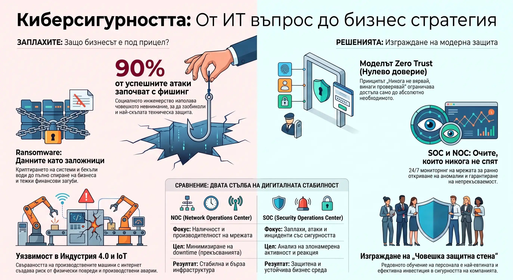

Cybersecurity Management
Виртуален директор по сигурността (vCISO)
Поемаме ролята на CISO за фирмата на непълен работен ден: изграждаме стратегия по сигурността, политики и план за съответствие, без наемане на щатен ръководител.

Сигурност на управленско ниво
Какво включва vCISO услугата
Работим с ръководството като външен експерт по сигурността — от оценката на риска до представянето пред борда. Част от задълженията може да е и подготовката за NIS2 и DORA.
- Стратегия по сигурносттаПриоритети и пътна карта, съобразени с дейността и бюджета на фирмата.
- Политики и процедуриИзготвяне и поддръжка на вътрешни правила за управление на данните и инцидентите.
- Управление на рискаРедовни оценки на рисковете и проследяване на мерките за намаляването им.
- Отчетност пред ръководствотоЯсни отчети за състоянието на сигурността и взетите решения.
Често задавани въпроси
vCISO
Кога една фирма има нужда от vCISO?
Когато няма щатен отговорник по сигурността, но има регулаторни изисквания (напр. NIS2 или DORA) или необходимост от управление на риска на управленско ниво.
Заменя ли vCISO вътрешен екип?
Не непременно — работим заедно с наличния ИТ екип, като стратегическото ръководство и отчетността са наша отговорност по договор.
Обхват и оферта
Как се формира vCISO офертата
Форматът (напр. брой дни на месец, обхват на отговорности и ниво на отчетност) се договаря писмено след запознаване с дейността и текущото състояние на сигурността.
За индивидуална оценка — заявете консултация.